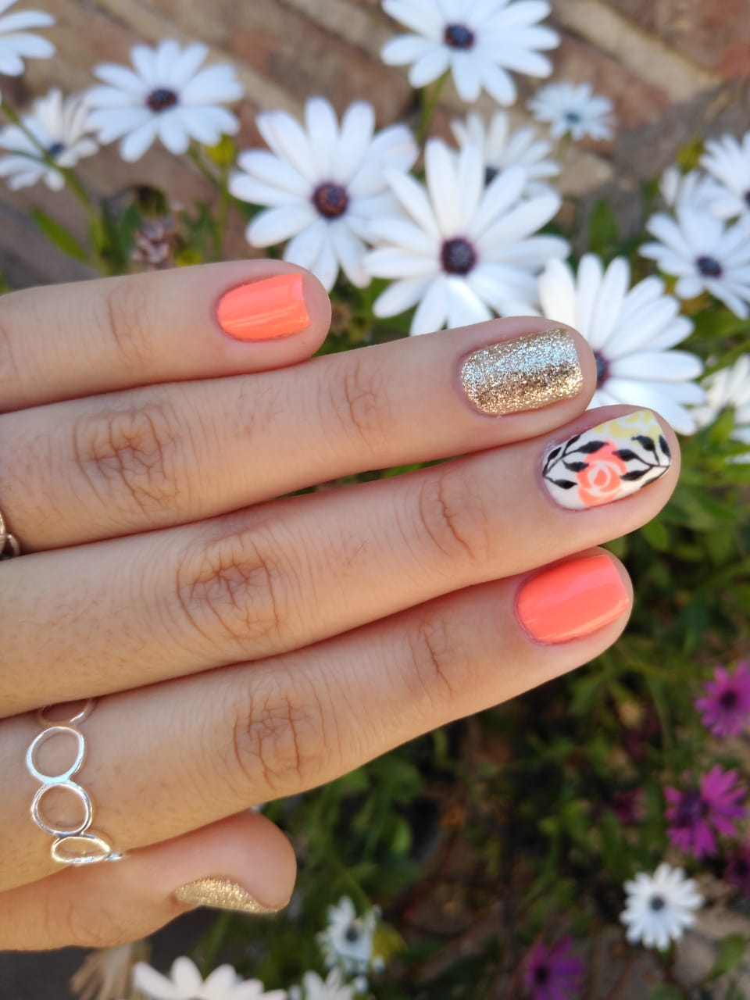
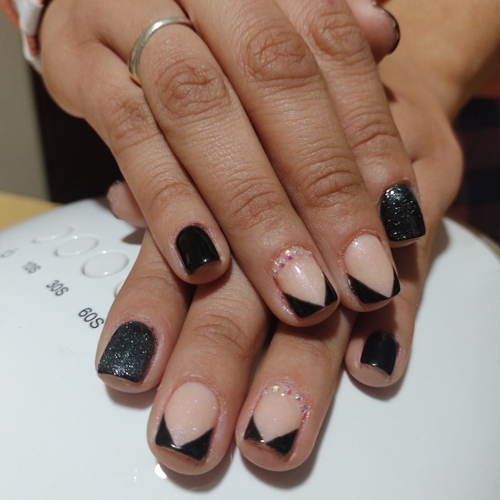

SERVICIOS:
ESMALTADO TRADICIONAL
SEMIPERMANETES
La manicura semipermanente es un esmaltado de secado inmediato y de larga duración que mantiene un resultado reluciente. Este efecto se consigue con la aplicación de esmaltes específicos y el secado de las uñas en una luz UV o LED. Si quieres que tus uñas se vean perfectas durante 15 días, la manicura semipermanente es la mejor opción.
ESCULPIDAS
Las uñas esculpidas son extensiones que se construyen a partir de la uña natural con material acrílico. Estas permiten restaurar y reconstruir uñas mordidas o simplemente, lucir uñas más largas. Algo que las hace sumamente atractivas, ya que se puede moldear la forma y longitud para obtener varios estilos.